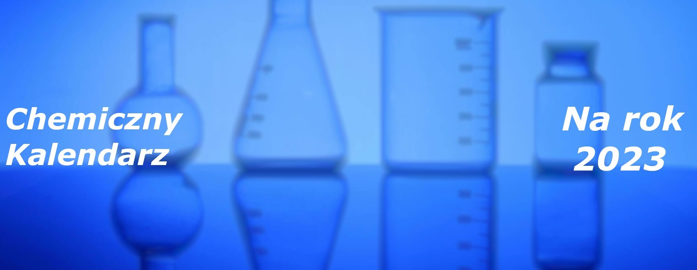
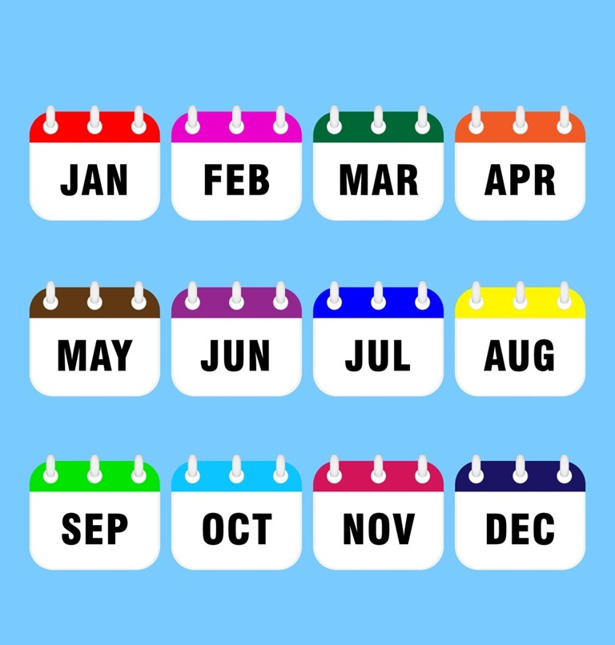
Źródła
(Aby zobaczyć wydarzenia
dla danego miesiaca nalezy nacisnąć na
niego, aby wrócić należy nacisnąć
poza obaszar tekstu który pojawia
się po kliknięciu na miesiąc)
Osiągnięcia w styczniu 2023
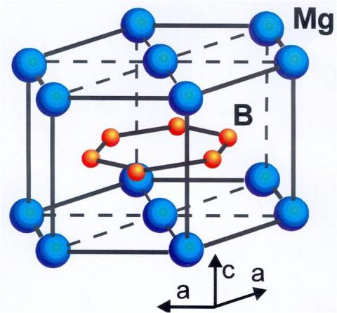
Odkrycie superprzewodnika: Naukowcy z Uniwersytetu w Cambridge dokonali przełomowego odkrycia, syntezując nowy materiał, który wykazuje nadprzewodnictwo w temperaturze
pokojowej. Oznacza to, że prąd elektryczny może płynąć przez ten materiał bez żadnego oporu, nawet w normalnych temperaturach, co otwiera drzwi do rewolucyjnych zastosowań
w dziedzinie elektroniki, energetyki
i transportu.
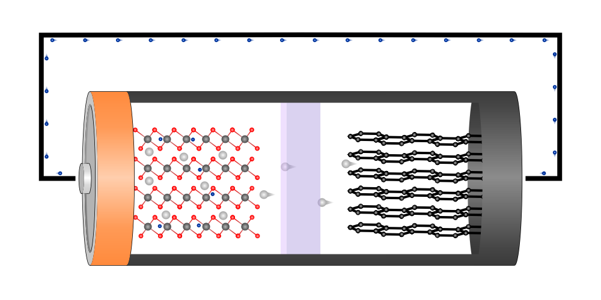
Polska innowacja w bateriach litowo-jonowych: Zespół badaczy z Politechniki Warszawskiej opracował nową metodę produkcji
baterii litowo-jonowych, która pozwala na znaczące zwiększenie ich pojemności i żywotności. To może mieć ogromny wpływ na rozwój elektromobilności i magazynowania energii
odnawialnej.
Osiągnięcia w lutym 2023
Walka z CO2: Międzynarodowy zespół naukowców opublikował w czasopiśmie "Nature" wyniki badań nad nowym katalizatorem, który może przyspieszyć i uczynić bardziej wydajny
proces wychwytywania CO2 z atmosfery. To może być kluczowy krok w walce ze zmianami klimatu i globalnym ociepleniem.
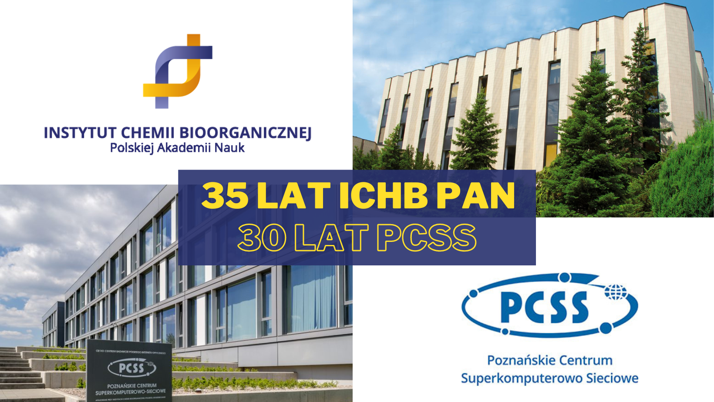
Nowa nadzieja w walce z nowotworami: Chemikom z Instytutu Chemii Organicznej PAN w Warszawie udało się zsyntetyzować nową cząsteczkę, która wykazuje obiecujące właściwości
antynowotworowe. Wstępne badania sugerują, że może ona być skuteczna w zwalczaniu różnych typów nowotworów, co daje nową nadzieję pacjentom na całym świecie.
Osiągnięcia w marcu 2023
Pierwszy związek heksazyny:
Naukowcy z kilku krajów stworzyli nowy związek chemiczny zbudowany z atomów azotu. Ten związek, nazwany K9N56, ma budowę pierścieniową i jest pierwszym sześcioczłonowym
pierścieniem azotowym, jaki kiedykolwiek wytworzono. Związek powstał w wyniku reakcji azotu z innym związkiem chemicznym pod bardzo wysokim ciśnieniem i temperaturą.
Naukowcy byli zaskoczeni, że azot może tworzyć tego typu struktury. Odkrycie to może mieć duże znaczenie dla chemii, ponieważ może pomóc nam zrozumieć, jak azot zachowuje
się w różnych warunkach i może doprowadzić do powstawania nowych materiałów o cennych właściwościach.
Osiągnięcia w kwietniu 2023
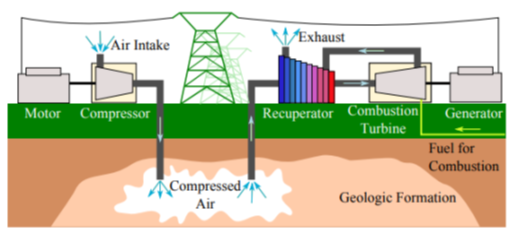
Magazynowanie energii elektrycznej: Zespół badaczy z Uniwersytetu Harvarda opublikował w czasopiśmie "Science" wyniki badań nad nową metodą magazynowania energii elektrycznej. Nowa technologia
może być bardziej wydajna
i trwała niż obecnie stosowane rozwiązania, co może mieć ogromne znaczenie dla rozwoju sieci energetycznych i systemów OZE.
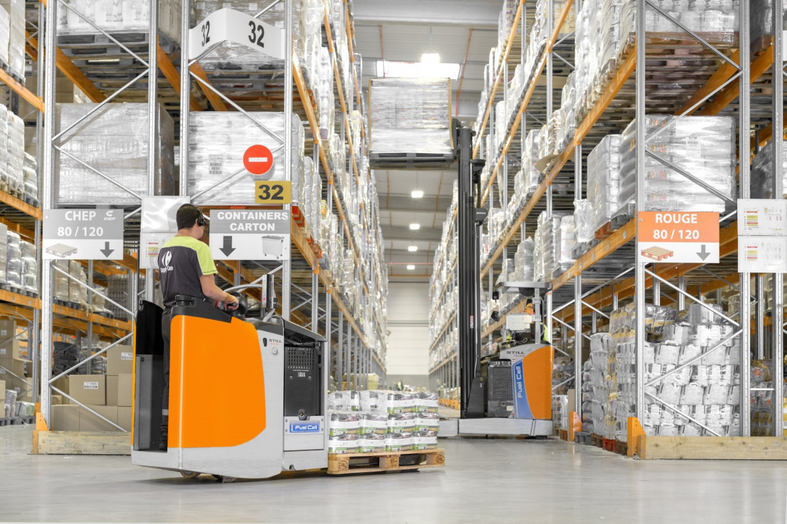
Polska fabryka ogniw wodorowych: Konsorcjum naukowo-przemysłowe rozpoczęło budowę pierwszej w Polsce fabryki ogniw wodorowych. Ogniwa wodorowe to bezemisyjne źródło energii,
które może mieć szerokie zastosowanie w transporcie, energetyce i przemyśle.
Osiągnięcia w maju 2023
Muchomor sromotnikowy - zabójczy grzyb, na który może być antidotum?
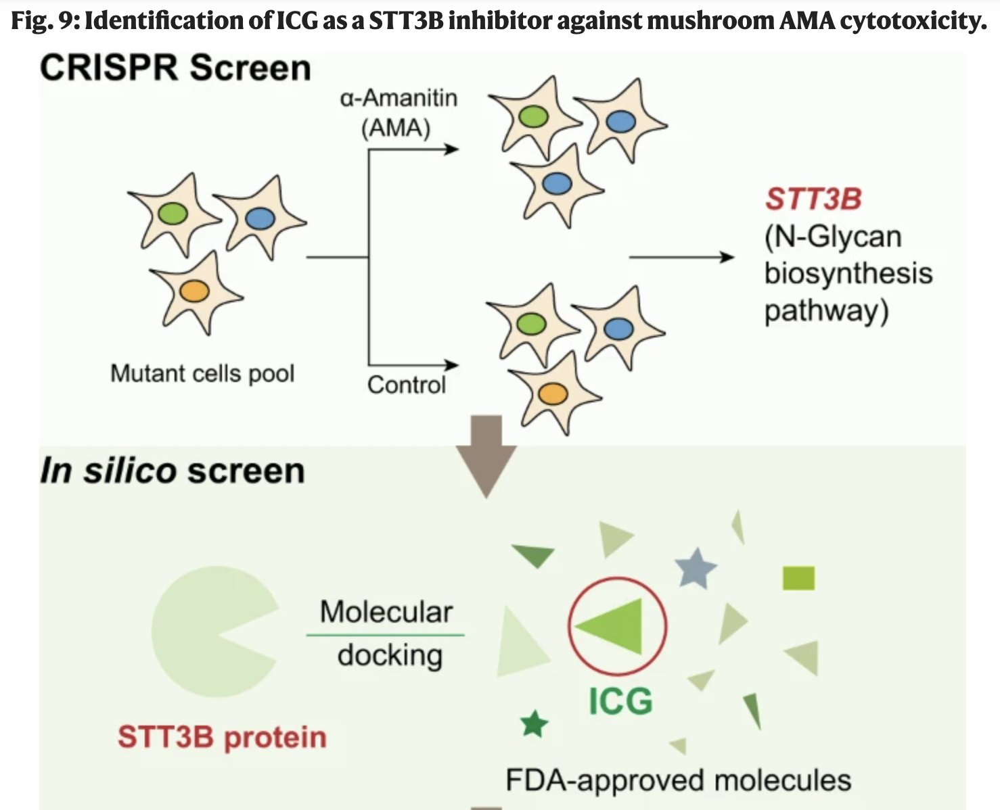
Muchomor sromotnikowy, znany również jako zielonawy, to grzyb budzący grozę. Nie bez powodu nazywany jest jednym z najbardziej trujących na świecie - odpowiada za aż 90% śmiertelnych zatruć grzybami.
Zawiera
α-amanitynę, niezwykle silną truciznę niszczącą wątrobę i inne narządy. Nawet najlepsze metody leczenia często okazują się bezradne w starciu z tym śmiertelnym wrogiem.
Jednak na horyzoncie pojawia się nadzieja. Opublikowane w maju badania w czasopiśmie "Nature" dają szansę na przełom w walce z muchomorem sromotnikowym. Zespół naukowców, wykorzystując technologię CRISPR, stworzył komórki o różnych mutacjach, by sprawdzić, które z nich okażą się odporne na α-amanitynę.
Odkrycie okazało się zaskakujące - komórki pozbawione białka STT3B okazały się niewrażliwe na działanie trucizny.
To przełomowe odkrycie otwiera drogę do opracowania antidotum.
Osiągnięcia w czerwcu 2023
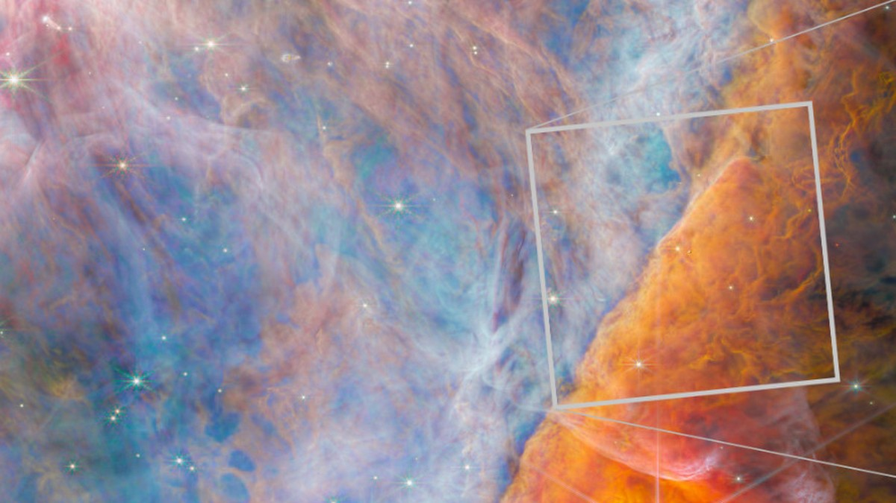
Kation metylu zauważony w kosmosie: Międzynarodowy zespół badaczy dokonał przełomowego odkrycia, wykorzystując Kosmiczny Teleskop NASA Jamesa Webba. Po raz pierwszy w historii sfotografowano kation metylowy (CH3+),
nowy związek węgla, w kosmosie! Cząsteczka ta, nigdy wcześniej nieobserwowana, znajduje się w Mgławicy Oriona - układzie gwiezdnym oddalonym od nas o około 1350 lat świetlnych.
Odkrycie to jest niezwykle istotne, ponieważ kation metylowy jest podstawowym budulcem bardziej złożonych cząsteczek organicznych, które mogą być prekursorami życia.
Osiągnięcia w lipcu 2023
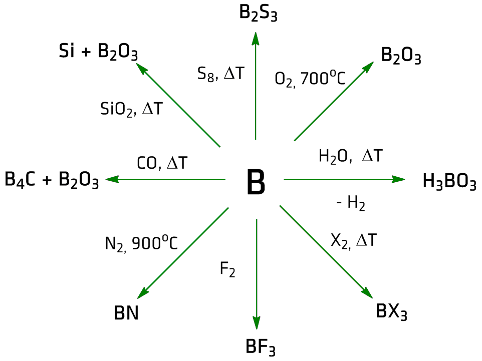
Naukowcy odkrywają strukturę tajemniczego związku chemicznego!
Tlenek boru (BO) to związek chemiczny, o którym po raz pierwszy wspomniano już w latach 40. XX wieku. Wtedy jednak nie udało się określić jego struktury z
powodu ograniczeń technologicznych. Teraz naukowcy, wykorzystując zaawansowane metody analizy,
w końcu odkryli, jak wygląda tlenek boru. Okazuje się, że jego cząsteczki
układają się w płaskie struktury przypominające "nanosiatki" 2D. Składają się one z pierścieni B4O2 połączonych mostkami tlenowymi, a następnie tworzą warstwy
o nieregularnych wzorach.
Według badaczy struktura tlenku boru jest podobna do "stosu papieru rzuconego na biurko" - lekko zdezorganizowanego, ale zachowującego swoją formę.
Osiągnięcia w sierpniu 2023
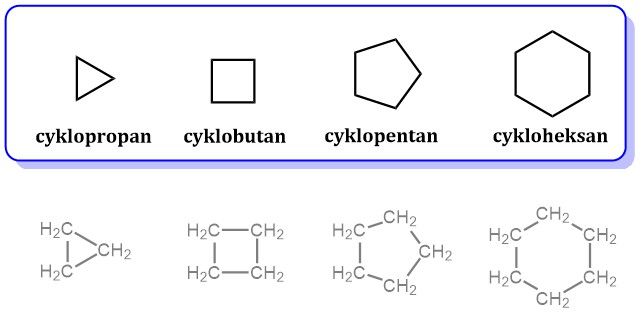
Naukowcy z Karlsruhe Institute of Technology (KIT) dokonali fascynującego odkrycia w dziedzinie chemii metaloorganicznej. Odkryli oni nowy typ związków chemicznych o nazwie "cykloceny".
Te niezwykłe związki mogą zawierać aż do 18 warstw atomów ułożonych w pierścieniowy sposób. Cykloceny otwierają nowe możliwości w chemii metaloorganicznej.
Naukowcy mają nadzieję, że te nowe związki znajdą zastosowanie w różnych dziedzinach,
m.in. w katalizie, elektronice czy medycynie.
Osiągnięcia w wrześniu 2023
Nowy lek na Alzheimera: Zespół badaczy z Uniwersytetu Oksfordzkiego opublikował w czasopiśmie "Nature" wyniki badań nad nowym lekiem na Alzheimera.
Nowa terapia daje nadzieję na poprawę jakości życia pacjentów z tą chorobą.
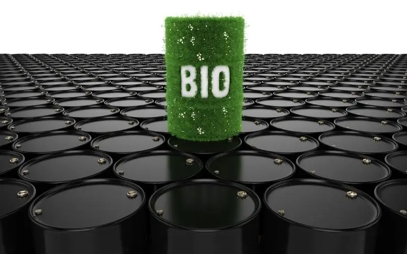
Biopaliwa nowej generacji: Konsorcjum naukowe rozpoczęło projekt budowy biopaliwni nowej generacji. Biopaliwa te mają być bardziej wydajne i zrównoważone niż obecnie
stosowane biopaliwa, co może przyczynić się do zmniejszenia zależności od paliw kopalnych.
Osiągnięcia w październiku 2023
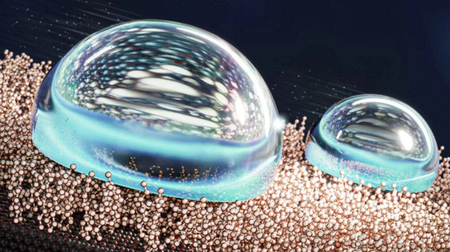
Odkrycie najbardziej wodoodpornej powierzchni:
Naukowcy dokonali przełomowego odkrycia w dziedzinie nanotechnologii, tworząc najbardziej wodoodporną powierzchnię na świecie. To może mieć szerokie zastosowanie,
m.in. w dziedzinie chłodzenia, odladzania, redukcji parowania,
a nawet w tworzeniu innowacyjnych urządzeń.
Sekret tej niezwykłej powierzchni tkwi w cienkiej warstwie specjalnych molekuł, które działają niczym smar, ułatwiając ślizganie się po niej kropli wody i innych cieczy.
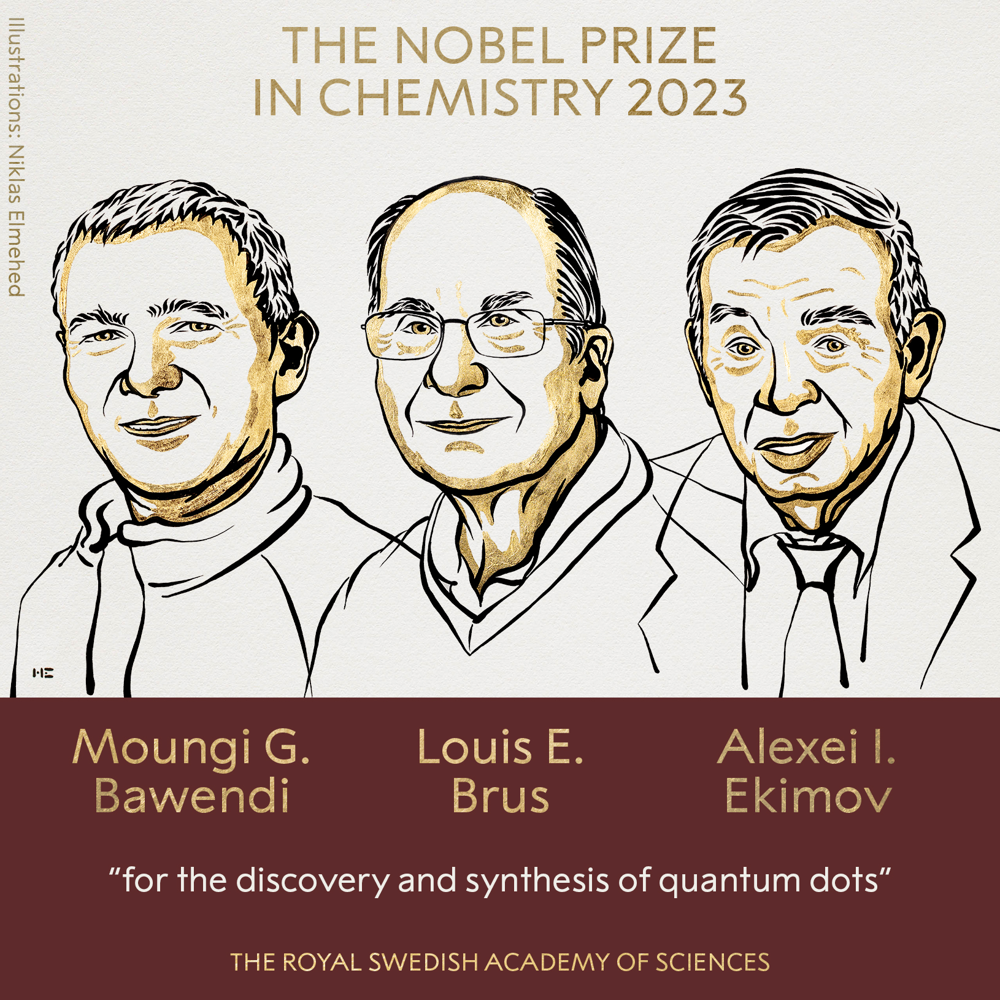
Nagroda Nobla w chemii:
Moungi G. Bawendi, Louis E. Brus oraz Alexei I. Ekimov otrzymali Nagrodę Nobla w dziedzinie chemii w 2023 roku. Była to 115. Nagroda Nobla w tej dziedzinie,
przyznana za "odkrycie i syntezę kropek kwantowych". Kropki kwantowe to nanocząstki o rozmiarze tak małym, że ich właściwości są całkowicie odmienne od właściwości makroskopowych materiałów.
Ich wyjątkowość polega na zdolności do emisji
i absorpcji promieniowania w sposób kontrolowany.
Osiągnięcia w listopadzie 2023
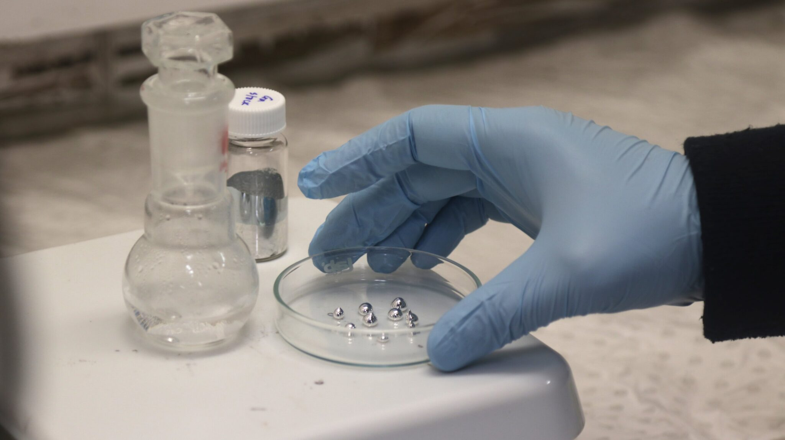
Ciekłe metale w produkcji katalizatorów:
W listopadzie 2023 roku naukowcy z Australii odkryli, że ciekłe metale, takie jak gal, mogą pełnić funkcję katalizatorów w reakcjach chemicznych. Dotychczas powszechnie stosowano katalizatory stałe, oparte na metalach lub
związkach metaloorganicznych. Wymagały one jednak wysokich temperatur,
co generowało wysokie koszty energetyczne i emisję szkodliwych gazów cieplarnianych.
Zastosowanie ciekłych metali jako katalizatorów otwiera zupełnie nowe możliwości. Ich działanie w niższych temperaturach pozwala na znaczące oszczędności energii i redukcję emisji CO2.
Oznacza to potencjalną rewolucję w przemyśle chemicznym, prowadzącą do bardziej zrównoważonych i przyjaznych dla środowiska procesów produkcyjnych.
Osiągnięcia w grudniu 2023

Podsumowanie roku 2023: Organizacja Narodów Zjednoczonych podsumowuje rok 2023 jako rok sukcesów w dziedzinie chemii. W ciągu tego roku dokonano wielu przełomowych odkryć i wynalazków,
które mogą mieć ogromny wpływ na nasze życie w przyszłości.
Gala wręczenia nagród dla najlepszych polskich chemików: W Warszawie odbyła się gala wręczenia nagród dla najlepszych polskich chemików. Nagrody te przyznawane są co roku
wybitnym naukowcom, którzy wnieśli znaczący wkład w rozwój chemii.
Źródła
- https://www.products.pcc.eu/pl/blog/
- gemini.google.com/app/
- grafiki google
Strona wykonana przez: Rafał Delekta, Mikołaj Perczyński, Tomacz Ciba